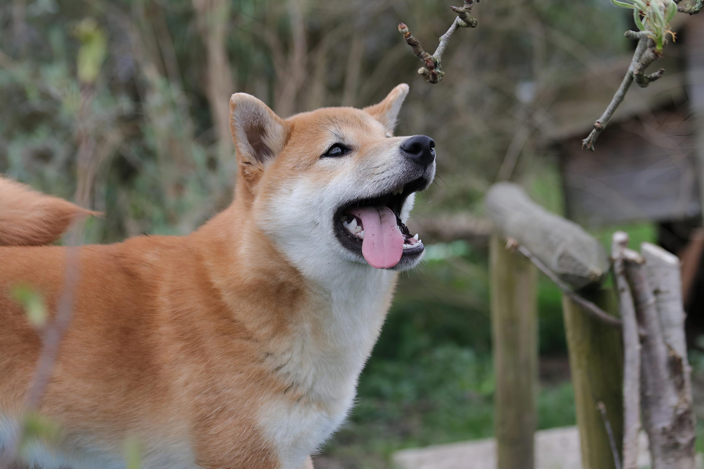

Shiba reu - Daiki - geboren september 2023
Daiki kwam bij ons via collega's.
Hij werd afgestaan aan hun door de broodfokker wegens overbeet.
Daiki had Giardia toen hij bij ons toekwam.
Hij is hier intussen succesvol tegen behandeld en wenst graag zijn forever familie te vinden.
Daiki is een heel pientere, lieve puber die stevig op zijn vier pootjes staat.
Hij moet nog veel leren, maar is gelukkig niet extreem angstig.
Nieuwe zaken bekijkt hij rustig en zoekt steun waar nodig.
Daiki zoekt een thuis met iemand die graag actief met hem zal gaan wandelen,
samen op avontuur gaan, samen spelen, ....
Voor hem zijn deze interactie en de activiteiten een must om gelukkig te zijn.
Denk jij dat Daiki jouw match kan zijn?
Stuur dan een mail via shibarescuevzw@gmail.com
Via deze weg ontvang je onze vragenlijst,



|